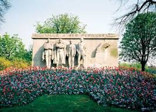

LA gauche, bras croisés, les yeux levés vers le ciel, Georges Maertens, commerçant ; son voisin, lui aussi bras croisés mais le regard assuré, c’est le représentant en commerce armentièrois Ernest Deceuninck (ou Deconninck) ; la tête baissée, les bras pendant le long du corps, l’ouvrier belge Sylvère Verhulst ; mains dans les poches, défiant ceux qui vont les tuer, Eugène Jacquet, grossiste en vin et secrétaire départemental de la Ligue des Droits de l’Homme. En dehors du piédestal, à l’extrême droite, effondré, face contre terre, le jeune étudiant Léon Trulin semble déjà mort. Il ne sera pourtant fusillé qu’un mois et demi après les autres, le 8 novembre 1915.
Monument aux fusillés lillois - Lille
En le plaçant, dans son monument, à côté des membres du « Comité Jacquet », le sculpteur Félix Desruelles a voulu rendre hommage à tous les « fusillés lillois » et aux « Résistants » de la Première Guerre mondiale. La position de Lille, à quelques kilomètres du front en zone occupée, favorise les contacts avec les Alliés en même temps qu’elle décuple la vigilance de l’occupant. Dans ce contexte, le pacifiste Jacquet rassemble de nombreux citoyens de tous milieux - un préfet et des industriels à côté de fraudeurs – pour constituer un réseau de renseignements pour les Alliés et d’évasion pour leurs soldats. .

Monument aux fusillés lillois - Lille
Le Comité Jacquet : des résistants lillois de la Première Guerre.
Ainsi, en mars 1915, une avarie contraint un avion britannique à atterrir dans la banlieue lilloise. Le Comité Jacquet prend en charge le pilote et le rapatrie en Grande-Bretagne. Robert Mapplebeck revient, quelque temps plus tard, survoler Lille pour remercier ses sauveurs et larguer des tracts narguant le gouverneur allemand von Heinrich. A la suite d’une dénonciation, 200 membres du réseau sont arrêtés. Jacquet et ses compagnons sont fusillés le 22 septembre 1915 dans les fossés de la Citadelle et les autres condamnés à la prison ou la déportation.
Dynamité en 1940, le monument sera reconstruit à l’identique, grâce à l’intervention de Germaine Desruelles, veuve du sculpteur.